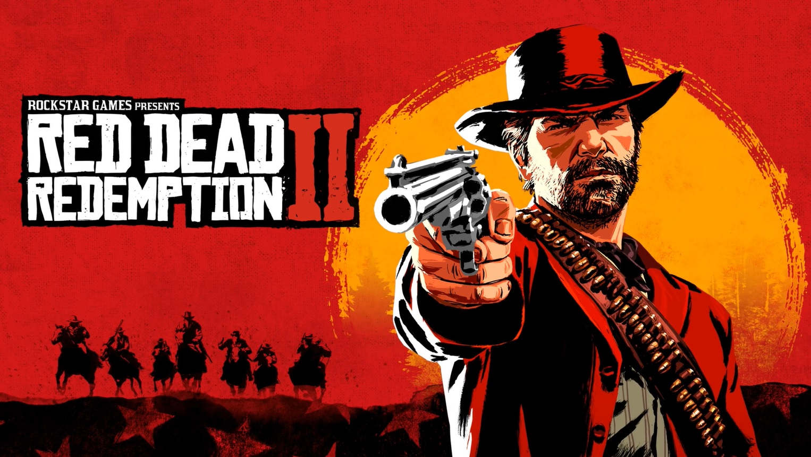
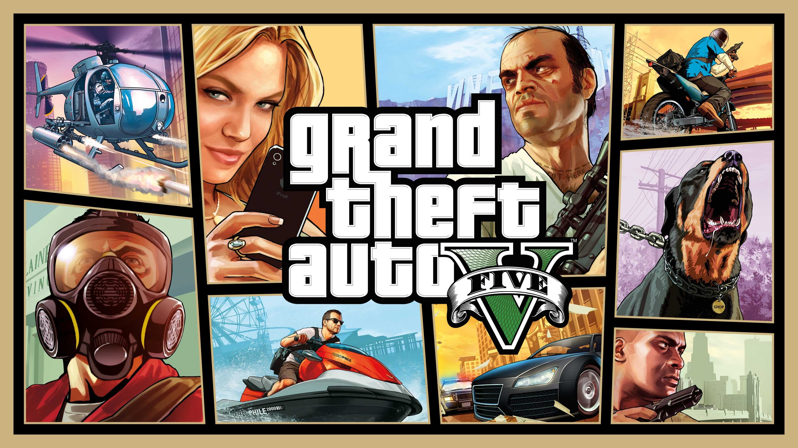
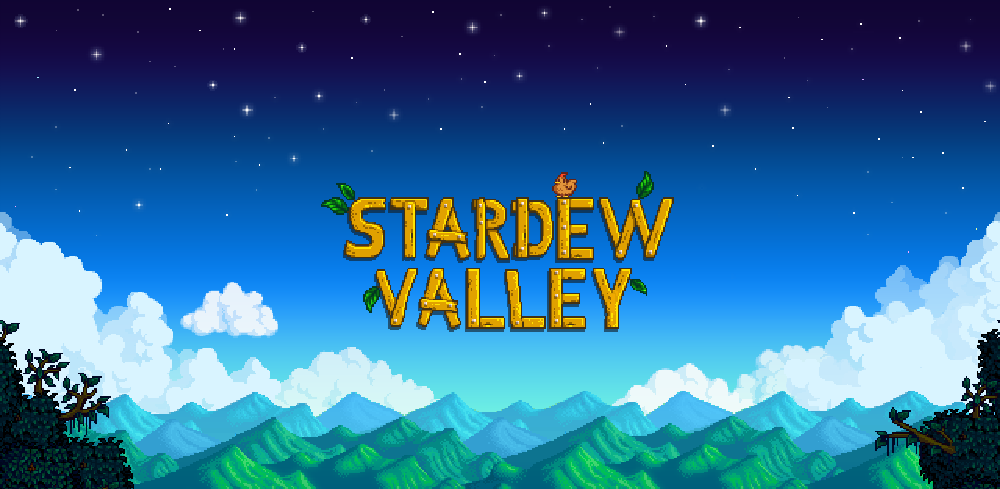
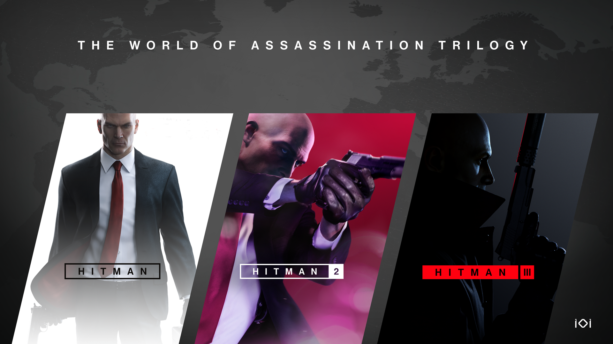

Andere spellen
Op deze pagina ga ik vertellen over andere favoriete games, naast Cyberpunk2077 en NieR:Automata, die worden namelijk nooit overtroffen. Om het kort samen te vatten ga ik praten over; Red Dead Redemption 2, Gta V, God of War(2018), Stardew Valley, Detroit Become Human en de Hitman franchise.
-
Red Dead Redemption 2
Red dead redemption 2 (ofwel red dead) Had het bijna gehaald om op de eerste pagina te komen met nier en cyberpunk, omdat ik het zon goed en leuk spel vond. Dit spel speelt zich af net na de periode van het wilde westen, wat eigenlijk de grondlegging van de verhaallijn is. Omdat de cowboys/outlaws nu niet meerr gewild zijn omdat het wilde westen voorbij is moet de gang van dutch van der linde (gangleider) constant op de vlucht zijn en kunnen ze hun tijdelijke kamp elke keer maar een paar weken laten staan. Het spel gaat over een outlaw genaamd Arthur Morgan, naarmate het spel vordert komt hij erachter dat de gangleider, dutch, eigenlijk te ver gaat in zijn daden en besluit arthur zichzelf te verbeteren.
-
Grand Theft Auto (GTA) V
Hoogstwaarschijnlijk heb je wel van GTA V gehoord. GTA bestaat uit 2 "sub"-spellen, een van die is een story spel waar je met 3 karakters overvallen pleegt en met familiesituaties, relatieproblemen, mentale problemen, etc omgaat. En een ander subspel "gta V ONLINE" waar je speelt als een nonverbaal karakter waar je eigenlijk in de gta wereld zelf kan rondrennen en overvallen plegen en gebouwen kopen en voertuigen kopen etc. GTA V heeft een apart plekje in mn lijstje met favoriete spellen, omdat ik er gewoon verreweg de meeste uren in heb zitten. Het is niet te vergelijken met iets als nier en cyberpunk maar toch fantastisch in zijn eigen manier
-
God of War

God of war is een storygame waar je speelt als een soort van "retired" griekse god met een zwaar verleden. Hij probeert een nieuw leven op te bouwen in het noorse gebied van de wereld, waar hij eigenlijk in de knoop raakt met het noorse pantheon (godenstelsel). Omdat kratos zo immens sterk is kan hij met relatief gemak gewoon het hele noorse pantheon van de kaart vegen, maar hij is juist hiernaar toe gekomen omdat hij zichzelf wil verbeteren en zijn verleden wilt ontvluchten. Nu blijkt dat moeilijk omdat de noorse goden hem als bedreiging zien (hij heeft namelijk in zn eentje het hele griekse pantheon/godenstelsel uitgemoord). Omdat ze kratos als bedreiging zien vallen een aantal noorse goden kratos aan, uiteraard worden ze verslagen maar deze situatie zet eigenlijk de toon voor het 2e spel, waar er een volslagen oorlog tussen kratos en het noorse pantheon ontketent.
-
Stardew Valley
Stardew valley (ofwel stardew) is echt iets heel anders dan hiervoorbenoemde spellen. Het is geen verhaalspel, het is meer te vergelijken met een soort minecraft. Je hebt je eigen boerderij, en kan nieuwe plantjes laten groeien, nieuwe gebouwen bbouwen, nieuwe dieren kopen, etc. Het is een heel rustgevend spel waar je eigenlijk gewoon je eigen ding kan doen. Je moet met veel verschillende dingen rekening houden wanneer je je farm wil laten groeien, zo moet je met het seizoen rekening houden, niet alle planten groeien in elk seizoen, je moet rekening houden met de tijd van de dag, Maar ook met bijv je stamina, als je teveel doet op een dag word je moe en kan je niet meer verder. Het is een heel leuk spel om te spelen als je gewoon even rustig aan wil doen en niet teveel wil nadenken.
-
Detroit Become Human

Detroit become human (ofwel dbh) is net als veel andere benoemde spellen een story game. In dit spel draait het allemaal om keuzes. Je speelt als 3 hoofdkarakters, die allemaal robots zijn. je speelt als connor, een robot detective, markus, een robot die een soort revolutie start, en kara, een robot die een klein meisje moet beschermen. Het spel speelt zich af in een wereld waar robots als minderwaardig beschat worden. Net als bij nier automata horen de robots eigenlijk geen gevoelens te hebben, maar je raad het al, gedurende het spel krijgen ze dat wel. Het spel is een van de meest complex en welgeschreven spellen die ik ooit gespeeld heb. het keuzesysteem alleen al is indrukwekkend. maak je een keuze om bijv een persoon te vermoorden, dan kan dat gevolgen hebben voor de rest van het spel.
-
Hitman Franchise
In hitman speel je als.... een hitman. Alhoewel de hitman franchise (1, 2 en 3) ook een subtiele verhaallijn heeft, vind ik die niet ontzettend relevant en ik zal hier ook niet op ingaan daarom. je speelt als een hitman genaamd Agent 47, het doel van elke missie uiteindelijk is om 1-3 verschillende personen af te maken. maar wat de spellen nou zo leuk maken in mijn opinie is dat je de targets op tientallen manieren kan vermoorden. Kandelaar boven hun hoofd laten vallen? Drankje vergiftigen? Ouderwets doodschieten? Van het balkon duwen? Ga zo maar door. De mappen waar je op speelt zijn bovendien ook gigantisch, waardoor je op ontzettend veel manieren bij de target kan komen en de target vermoorden, en bijv verschillende disguises kan aannemen. En omdat er dus zoveel verschillende mogelijkheden per missie zijn is het ook leuk om ze opnieuw te spelen ookal heb je het al gedaan.